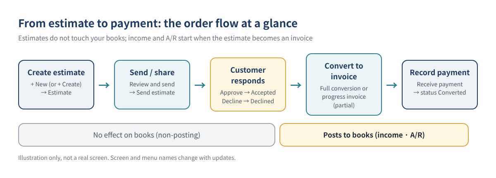
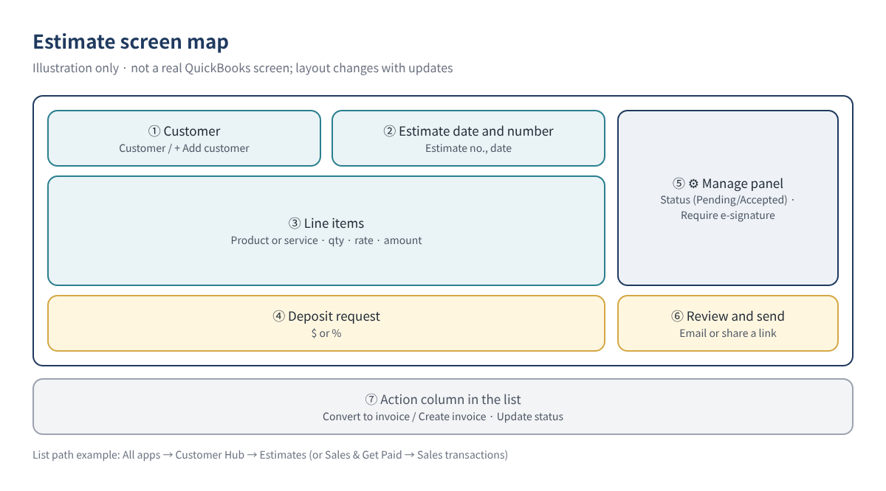
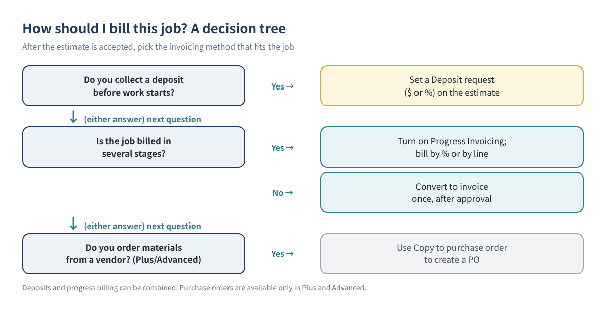
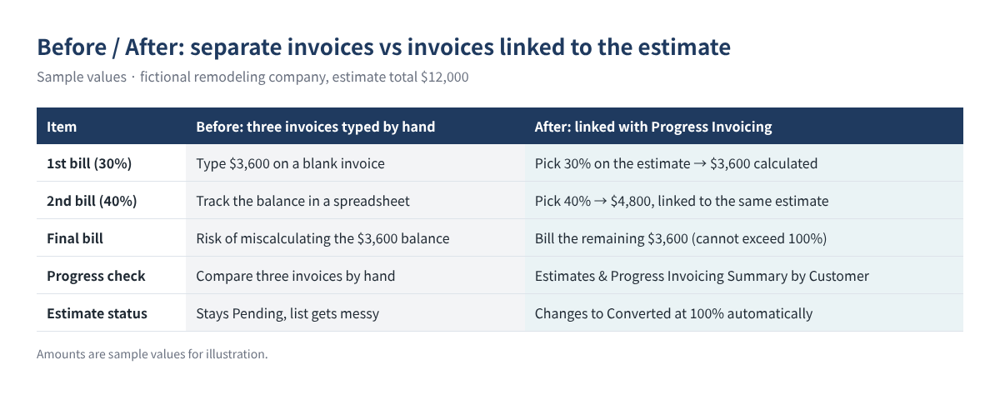

Many small businesses write quotes in Word or Excel, then retype everything into QuickBooks Online (QBO) as an invoice when the job is done. That means entering the same items and prices twice, and keeping side notes on how much deposit was collected, which stage has been billed and what is still left. For contractors, remodelers, caterers, sign shops and IT project firms that work "quote, approve, do the work, bill," one missing note can mean under-billing a customer or billing them twice.
This guide walks through the full flow in QBO: creating and sending an estimate, tracking whether the customer accepted it, collecting a deposit, billing in stages with progress invoicing, and turning the estimate into invoices that stay linked to it. It expands the short "sales flow" section of the series opener, QuickBooks Online Basics for Beginners, into step-by-step instructions.
Who this is for ☐ You build quotes outside QBO and retype them as invoices ☐ You take deposits and aren't sure how they hit the books ☐ You bill large jobs in stages such as 30% / 40% / 30% ☐ You want to see at a glance which estimates were won and which are still waiting
The first thing to know: an estimate is a non-posting transaction. Intuit's help explains that estimates don't affect your books until they are converted to an invoice. You can create a hundred estimates and your Profit and Loss and Accounts Receivable won't move. Income and A/R start only when an estimate becomes an invoice.

Each transaction type leaves a different footprint, so it helps to keep this table handy.
| Transaction | When you use it | Effect on the books |
|---|---|---|
| Estimate | Proposing a price before work starts | None (non-posting) |
| Deposit on an estimate | Collecting part of the price when the customer accepts | Recorded in a liability account, not A/R, until the estimate becomes an invoice |
| Invoice | Billing an amount to be paid later | Income and A/R increase |
| Receive payment | The customer pays an invoice | A/R decreases, the deposit-to account increases |
Tip The deposit treatment above applies when you use QBO's "deposit on an estimate" feature. If you record deposits some other way (for example, as a separate deposit), the accounting differs, so pick one method and stick with it.
Estimates go much faster when your customers and products or services are already set up. If your lists aren't ready yet, see Import customers, vendors and products from Excel first.

Sent estimates are listed under All apps → Customer Hub → Estimates (or Sales & Get Paid → Sales transactions). The list shows whether a customer has viewed, accepted or declined each estimate. Left-menu names change often; if you can't find it, type "Estimates" in the search bar.
A clean estimates list tells you which jobs you won and which quotes need a follow-up call. These are the statuses Intuit's help describes:
| Status | Meaning | How it changes |
|---|---|---|
| Pending | Sent, no answer yet (default) | Automatic for a new estimate |
| Accepted | Customer approved; ready to invoice | Automatic when the customer accepts from the email; set it yourself for a verbal OK |
| Declined (Rejected on some screens) | Customer turned it down | Automatic when declined from the email, or set manually |
| Converted | The full estimate has been invoiced | Automatic once the full amount is invoiced |
To change a status yourself, go to the estimates list, open the Action column dropdown on that row, choose Update status, pick the status and select OK. You can also change it in the ⚙ Manage panel of the estimate.
Watch out Intuit recommends marking a declined estimate as Declined rather than deleting it. Keeping the record lets you measure your win rate and reuse it if the customer comes back. Delete only estimates created by mistake (select it in the list → More actions → Delete).
Only an Accepted estimate can be converted. To revive a declined one, set it back to Pending, resend it and get it accepted. Before converting, decide how you'll bill the job.

The new invoice is linked to the estimate. Open the invoice and look at Linked transactions to see which estimate it came from.
If you take money up front, you can request a deposit right on the estimate.
For the customer to pay the deposit online, you need a QuickBooks Payments merchant account. Without it, the customer can see the deposit amount and approve the estimate but can't pay online.
A paid deposit sits in a liability account until the estimate becomes an invoice, because the work hasn't been done yet. When you convert the estimate, the paid deposit is applied automatically as a partial payment, and the customer is billed only for the balance. Whether QBO converts an estimate to an invoice automatically when a deposit is paid is controlled in ⚙ Settings → Account and settings → Sales → Deposits on estimates (the setting applies to future deposits).
Watch out Intuit's help reminds users to check their state for additional rules on customer deposits. Some industries have limits on deposit size or refund terms, so check your state's rules before you collect.
A verbal OK can turn into "I never agreed to that price." According to Intuit's help, you can require an e-signature on estimates in QuickBooks Online Simple Start, Essentials, Plus and Advanced.
Construction and longer projects are often billed in stages, such as 30% at start, 40% mid-way and 30% at completion. Typing separate invoices each time forces you to track the balance yourself. With progress invoicing, several partial invoices link to one estimate and QBO keeps track of what's left.

To monitor progress, run Estimates & Progress Invoicing Summary by Customer under Reports. It lists each customer with an open estimate, the amount estimated, the amount invoiced and the amount left to invoice. For a simple list of estimate statuses and linked invoice numbers, use Estimates by Customer.
If you need to order the estimate's materials from a vendor, you can copy the estimate to a purchase order (PO). Intuit's help states that purchase orders are available only in QuickBooks Online Plus and Advanced.
Assume a fictional remodeler, "Sunrise Interior LLC," quotes a kitchen job to Customer A (fictional). Sales tax is left out to keep the example simple.
| Estimate #1045 line | Estimate | Bill 1 (30%) | Bill 2 (40%) | Final (remaining) |
|---|---|---|---|---|
| Demolition | $2,000 | $600 | $800 | $600 |
| Cabinets and materials | $6,000 | $1,800 | $2,400 | $1,800 |
| Installation labor | $4,000 | $1,200 | $1,600 | $1,200 |
| Total | $12,000 | $3,600 | $4,800 | $3,600 |
Sample values
For smaller jobs, the same company might use a deposit instead:
| Step | Amount | What hits the books |
|---|---|---|
| Send estimate #1052 (bathroom faucet replacement, 25% deposit) | $2,000 / deposit $500 | Nothing |
| Customer accepts and pays the deposit | $500 | Liability account $500 |
| Convert to invoice after the work | $2,000 | Income $2,000; $500 deposit applied as partial payment |
| Balance received | $1,500 | A/R back to zero |
Sample values
No. Estimates are non-posting, so they don't affect your Profit and Loss or Balance Sheet until converted to an invoice.
In the estimates list, use the Action column's Update status and choose Accepted. To reduce disputes, an e-signature is the safer record when possible.
With QBO's estimate deposit feature, the deposit is recorded in a liability account, not A/R, until the estimate is converted; on conversion it is applied as a partial payment.
Turn it on first under Settings → Account and settings → Sales. If it still doesn't appear, availability may depend on your plan and screen version; check your subscription and Intuit's help.
The Intuit help articles reviewed for this guide don't cover estimate expiration dates. Check whether your form has such a field; if not, state the validity period in the message or memo.
This article is general educational information, not tax, legal or financial advice. For decisions about your own situation, consult a qualified professional. QuickBooks Online screens, menu names, plan features and prices change often; check your current screens and Intuit's official guidance before you act. The businesses and customers in the examples are fictional.
QuickBooks is a registered trademark of Intuit Inc.; not affiliated with or endorsed by Intuit.